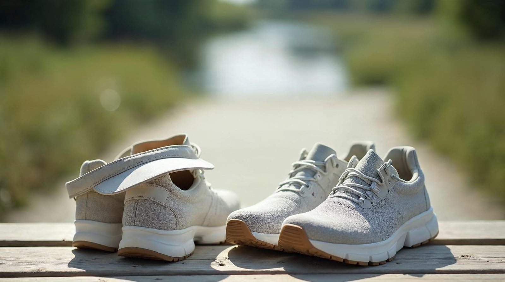
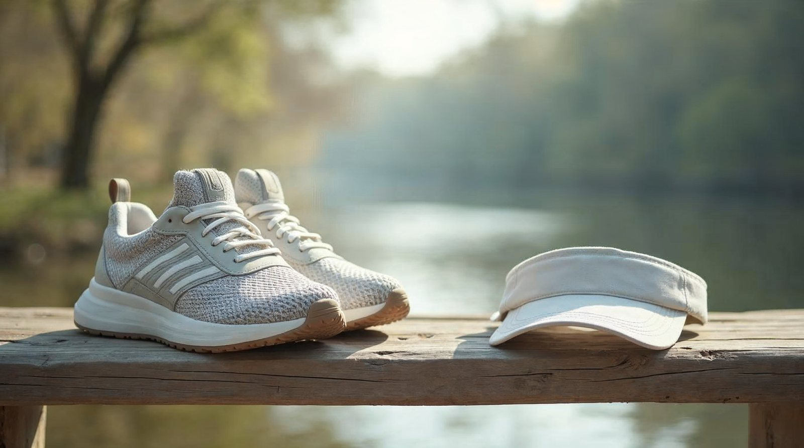
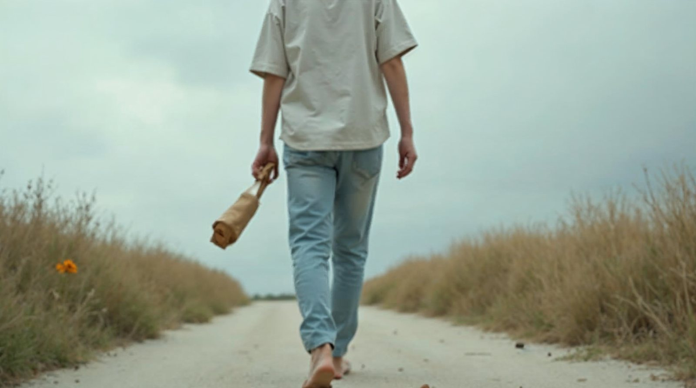
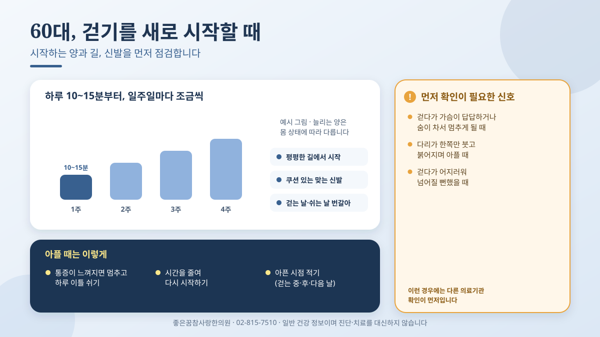

이종호 한의사 감수좋은꿈참사랑한의원 대표원장 (한의사 면허번호 19769)발행 2026-11-23 · 수정 2026-11-25
이 글의 차례
건강을 위해 걷기를 시작했다가 며칠 만에 무릎이나 허리가 아파 멈추는 분이 많습니다. 시작하는 양과 길, 신발을 조금 바꾸면 훨씬 편하게 이어갈 수 있어, 처음 한두 달의 계획을 함께 세워 보는 것이 좋습니다.
왜 이런 불편이 생길 수 있나요
- 오래 쉬던 몸에 갑자기 많은 걸음이 더해지면 무릎과 발, 허리가 적응할 시간이 부족합니다.
- 오르막과 내리막이 많은 길은 평지보다 무릎에 더 큰 부담을 줍니다.
- 쿠션이 닳은 신발이나 발에 맞지 않는 신발은 걸을 때마다 충격을 더합니다.
- 예전에 아팠던 무릎이나 허리가 있다면 그 부위가 먼저 신호를 보내기도 합니다.

처음 한두 달은 이렇게 늘려 보세요
- 첫 1~2주: 평지에서 하루 10~15분, 옆 사람과 이야기를 나눌 수 있을 정도의 속도로 걷습니다.
- 3~4주: 몸이 편하면 하루 20~30분으로 늘리되, 한 번에 늘리는 양은 5분 안팎으로 합니다.
- 5~8주: 완만한 오르막을 조금 섞어 보고, 다음 날 아침 무릎과 허리 상태를 보고 이어 갈지 정합니다.
- 어느 단계든 다음 날까지 통증이 남으면 한 단계 앞으로 돌아갑니다.
자주 하는 오해
- 많이 걸을수록 몸에 좋다고 여기기 쉽지만, 갑자기 늘린 걸음은 무릎과 발에 부담이 되어 오히려 걷기를 멈추게 만들기도 합니다.
- 아파도 참고 걸어야 근육이 생긴다고 생각하기 쉽지만, 통증을 참고 이어 가면 다른 부위까지 자세가 무너질 수 있습니다.
- 빠르게 걸어야만 운동이 된다고 여기기 쉽지만, 처음에는 대화가 가능한 속도로 꾸준히 걷는 것이 몸에 익히기 쉽습니다.
- 운동화라면 어떤 것이든 괜찮다고 생각하기 쉽지만, 쿠션이 닳거나 발볼이 맞지 않는 신발은 걸을 때마다 충격을 더합니다.
예를 들면 이런 경우입니다
- 예를 들어 은퇴 뒤 동네 공원을 매일 한 시간씩 걷기 시작했다가 무릎이 붓는 경우라면, 시간을 절반 이하로 줄이고 평지 위주로 다시 시작하는 계획을 함께 세웁니다.
- 예를 들어 혈압약을 드시는 분이 새벽 찬 공기 속에서 걷기를 시작하려는 경우라면, 해가 뜬 뒤 몸을 풀고 시작하는 쪽을 권하고 걸을 때 숨참이나 어지럼이 없는지 함께 확인합니다.
- 예를 들어 상도동 언덕길을 오가며 걷고 싶은 분이라면, 처음 몇 주는 평평한 길을 고르고 오르막은 몸이 익숙해진 뒤에 조금씩 섞습니다.
- 예를 들어 친구와 함께 걷다 보면 속도와 거리가 자꾸 늘어나는 분이라면, 처음 몇 주는 각자 편한 속도로 걷고 중간에 만나는 식으로 양을 조절해 봅니다.
먼저 이렇게 여쭙니다
- 걷기를 시작한 지 얼마나 되었고 하루에 얼마나 걸으시나요?
- 걷는 중에 아픈가요, 걷고 난 뒤에 아픈가요?
- 어떤 신발을 신고, 평지와 오르막 중 어디를 주로 걸으시나요?
- 이전에 무릎이나 허리가 아팠던 적이 있나요?
- 걸을 때 숨이 차거나 가슴이 답답한 적은 없나요?
- 걷고 난 다음 날 아침 몸 상태는 어떠신가요?
일상에서 먼저 해 볼 수 있는 것
- 처음에는 하루 10~15분 정도로 시작해 일주일마다 조금씩 늘리기
- 걷기 전에 발목과 무릎을 천천히 풀어 주기
- 쿠션이 있고 발에 맞는 신발을 신고 평평한 길에서 시작하기
- 통증이 느껴지면 멈추고 하루 이틀 쉰 뒤 시간을 줄여 다시 시작하기
- 걷는 날과 쉬는 날을 번갈아 두기
- 걷는 날짜와 시간, 걸음 수를 달력에 간단히 적어 두기

걷기를 시작하기 전에 점검해 보세요
- 예전에 무릎이나 허리가 아파 치료받은 적이 있다
- 걷다가 숨이 차거나 가슴이 답답해 멈춘 적이 있다
- 혈압약이나 당뇨약을 먹고 있다
- 신발 쿠션이 닳았거나 발에 맞지 않는다
- 걷고 난 다음 날 아침 무릎이 뻣뻣하다
- 아침 첫발을 디딜 때 발바닥이나 발뒤꿈치가 아프다
- 오래 쉬다가 한꺼번에 많이 걷기 시작했다
해당하는 항목이 있다면 걷는 양을 정하기 전에 진료 때 함께 말씀해 주세요.
한의원에서 함께 살필 수 있는 경우
- 걷고 나면 무릎이 뻐근하게 이어지는 경우 걸음걸이와 다리의 균형을 함께 살핍니다.
- 걷는 동안 허리가 당기고 앉으면 편해지는 경우 자세와 걷는 습관을 함께 살핍니다.
- 시작하자마자 포기하게 되는 경우 몸 상태에 맞는 속도와 생활 리듬을 함께 살핍니다.
좋은꿈참사랑한의원에서는 걷는 모습과 무릎·허리의 움직임을 보고, 아픈 시점이 걷는 중인지 걷고 난 뒤인지 확인합니다. 필요하다고 판단될 때 침이나 약침, 추나 등을 정하고, 상도동처럼 언덕이 많은 동네에서는 어떤 길부터 시작하면 좋을지 함께 이야기합니다.
첫 방문에는 문진표를 쓴 뒤 원장이 걷기를 시작한 시기와 하루 걷는 양, 아픈 부위와 시점, 혈압이나 당뇨 같은 병력과 복용 약을 여쭙고, 모든 분께 진맥을 짚습니다. 이어서 서 있는 모습과 걷는 모습, 무릎과 허리를 굽히고 펴는 범위를 보고, 필요하다고 판단될 때 초음파로 아픈 부위를 살핍니다.
오늘 할 치료와 이유를 먼저 설명드리고, 다음 진료까지 걸을 시간과 길을 함께 정해 기록해 오시도록 안내합니다.
이렇게 기록해 오시면 상담이 쉬워집니다
- 날짜별 걸은 시간이나 걸음 수
- 걸은 길(평지, 오르막, 계단)과 신은 신발
- 아픈 부위와 아픈 시점(걷는 중, 걷고 난 뒤, 다음 날 아침)
- 걸은 날의 날씨와 걷기 시작한 시각(이른 아침, 저녁 등)
- 걷는 중 쉬어 간 횟수와 쉬게 된 이유

며칠 지켜보고, 언제 바로 확인하나요
- 걷기를 시작하고 다음 날 조금 뻐근한 정도는 흔하며, 걷는 시간을 줄이고 하루 이틀 쉬면서 지켜볼 수 있습니다.
- 시간을 줄여도 1~2주 넘게 같은 부위가 아프거나, 걷는 중에 통증이 점점 빨리 나타난다면 진료를 받아 보세요.
- 걷다가 가슴이 조이거나 숨이 심하게 차고 식은땀이 나면 바로 멈추고 가까운 응급실로 가세요. 한쪽 다리가 붓고 붉어지면 기다리지 말고 바로 병원으로 가세요.
이런 증상은 먼저 확인이 필요합니다
- 걷다가 가슴이 답답하거나 숨이 차서 멈추게 되는 경우
- 다리가 한쪽만 붓고 붉어지며 통증이 있는 경우
이런 신호가 있으면 한의원보다 가까운 병원이나 응급실을 먼저 찾으세요.
함께 읽으면 좋은 글
- 어르신이 겨울에 걷다가 무릎과 고관절이 아플 때는 어떻게 살피나요?
- 걸으면 다리가 무겁고 쉬면 편해지는 것은 무엇을 살펴보나요?
- 무릎이 아프면 운동을 완전히 쉬어야 할까요?

여쭙는 것
- 걷기를 시작한 지 얼마나 되었고 하루에 얼마나 걸으시나요?
- 걷는 중에 아픈가요, 걷고 난 뒤에 아픈가요?
- 어떤 신발을 신고, 평지와 오르막 중 어디를 주로 걸으시나요?
생활에서 해 볼 것
- 처음에는 하루 10~15분 정도로 시작해 일주일마다 조금씩 늘리기
- 걷기 전에 발목과 무릎을 천천히 풀어 주기
- 쿠션이 있고 발에 맞는 신발을 신고 평평한 길에서 시작하기
한의원에서 함께 살필 것
- 걷고 나면 무릎이 뻐근하게 이어지는 경우 걸음걸이와 다리의 균형을 함께 살핍니다.
- 걷는 동안 허리가 당기고 앉으면 편해지는 경우 자세와 걷는 습관을 함께 살핍니다.
- 시작하자마자 포기하게 되는 경우 몸 상태에 맞는 속도와 생활 리듬을 함께 살핍니다.
먼저 확인이 필요한 신호
- 걷다가 가슴이 답답하거나 숨이 차서 멈추게 되는 경우
- 다리가 한쪽만 붓고 붉어지며 통증이 있는 경우
한눈에 보는 표
| 구분 | 핵심 |
|---|---|
| 여쭙는 것 | 걷기를 시작한 지 얼마나 되었고 하루에 얼마나 걸으시나요? 걷는 중에 아픈가요, 걷고 난 뒤에 아픈가요? |
| 생활에서 해 볼 것 | 처음에는 하루 10~15분 정도로 시작해 일주일마다 조금씩 늘리기 걷기 전에 발목과 무릎을 천천히 풀어 주기 |
| 한의원에서 함께 살필 것 | 걷고 나면 무릎이 뻐근하게 이어지는 경우 걸음걸이와 다리의 균형을 함께 살핍니다. 걷는 동안 허리가 당기고 앉으면 편해지는 경우 자세와 걷는 습관을 함께 살핍니다. |
| 먼저 확인이 필요한 신호 | 걷다가 가슴이 답답하거나 숨이 차서 멈추게 되는 경우 다리가 한쪽만 붓고 붉어지며 통증이 있는 경우 |
자주 묻는 질문
하루에 만 보를 꼭 걸어야 하나요?
정해진 숫자보다 내 몸이 편안한 범위에서 꾸준히 이어가는 것이 중요합니다.
아침과 저녁 중 언제 걷는 것이 좋나요?
생활과 컨디션에 맞추면 됩니다. 추운 날 이른 아침에는 몸이 굳어 있을 수 있어 가볍게 풀고 시작하세요.
무릎이 아프면 걷기를 그만둬야 하나요?
바로 그만두기보다 시간과 길을 줄여 다시 시작해 보고, 통증이 이어지면 상담해 보시길 권합니다.
걷기 전후에 스트레칭을 해야 하나요?
정해진 방법은 없지만 발목과 무릎을 가볍게 풀고 시작하면 몸이 덜 놀랍니다. 걸은 뒤에도 종아리와 허벅지를 천천히 늘려 주세요.
비가 오거나 추운 날은 어떻게 하나요?
무리하게 나가기보다 실내에서 제자리걷기나 의자에서 일어났다 앉기처럼 가벼운 동작으로 대신해도 됩니다.
걷기 대신 자전거나 수영을 해도 되나요?
무릎 부담이 적은 운동을 섞는 것도 방법입니다. 다만 처음 하는 운동은 짧게 시작해 몸 반응을 보며 늘려 주세요.
좋은꿈참사랑한의원은 재진 때 지난번 이야기부터 이어서 여쭙니다. 진료시간과 예약은 오시는 길에서 확인하세요.
어디서 상담받을 수 있나요?
좋은꿈참사랑한의원은 서울 동작구 만양로2길 2 신성빌딩 3층·5층(서울 동작구 상도동, 7호선 상도역 3번 출구 근처)에 있습니다. 한의사 3명(이종호 대표원장, 조영기 수석진료원장, 정원영 진료원장)이 진료합니다. 진료시간은 평일 09:30~20:00(점심 13:00~14:00), 토·일·공휴일 09:30~15:00이며, 방문 전 전화로 확인을 권합니다. 예약은 네이버 예약, 카카오톡 상담, 전화 02-815-7510로 받습니다.
이 글은 일반적인 건강 정보이며 개인의 진단이나 치료를 대신하지 않습니다. 증상이 있거나 복용 중인 약이 있다면 진료를 통해 확인하세요. 치료 효과는 개인마다 다를 수 있습니다.
작성 기준: 일반적으로 알려져 있는 건강 정보를 참고해 정리했습니다(대표원장 감수). 증상 기록은 1~2주 동안 하루 1회, 비슷한 시간에 적어 오시면 지난 상태와 비교하기 쉽습니다.